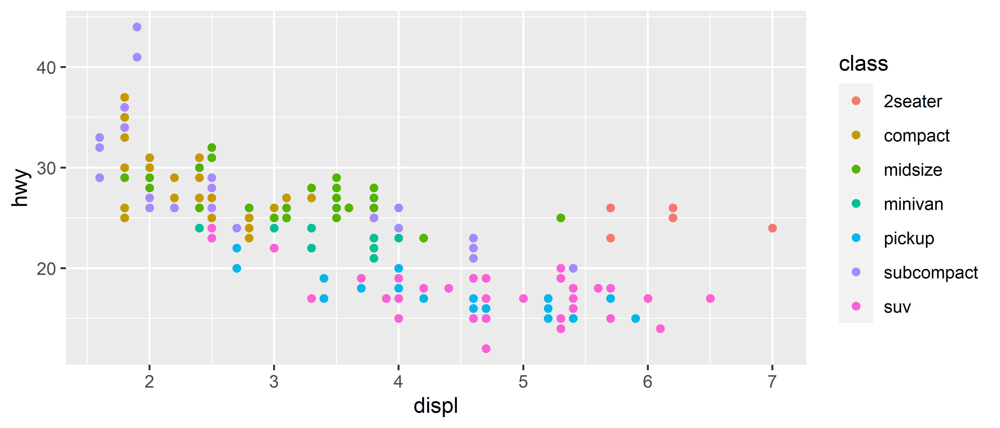
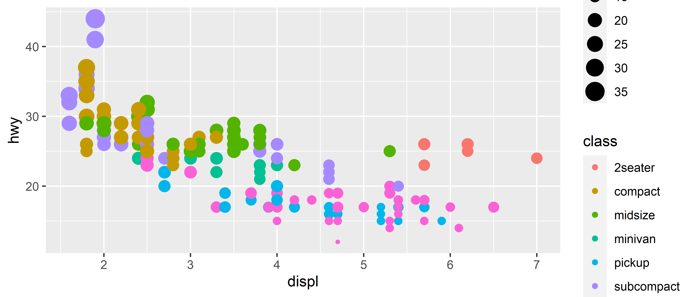
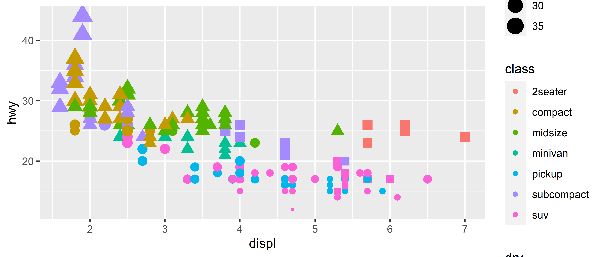
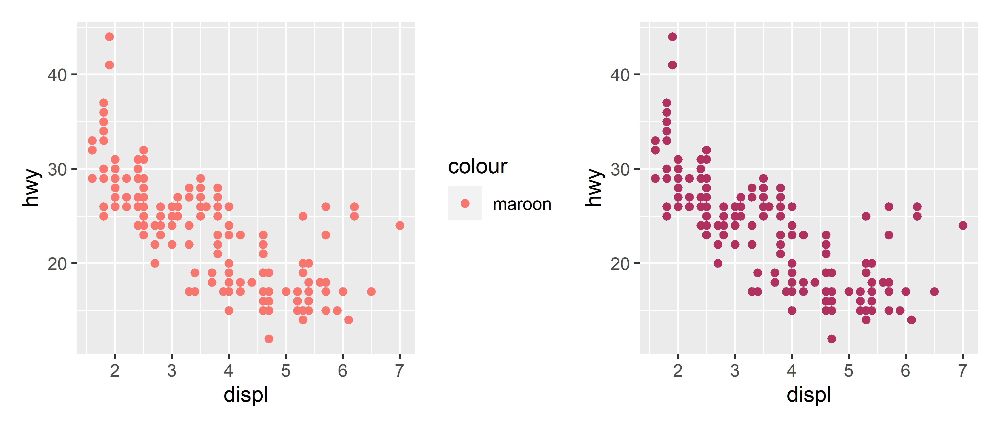

4.4 Cores, tamanhos, formas e outros atributos estéticos
No primeiro gráfico apenas usamos o mapeamentos estéticos x e y para definir em qual eixo as observações seriam colocadas, porém existem outras estéticas como tamanho (size), forma (shape) e cor (color, fill) que também podem ser mapeadas no gráfico de acordo com os valores das variáveis.
Um exemplo é plotar os valores da variável classe como cores no gráfico:

Assim começamos a procurar por relacionamentos nas variáveis. Podemos também usar o tamanho dos pontos como mapeamentos estéticos.

Veja que as legendas aparecem automaticamente ao lado direito, junto com as cores. Finalmente podemos usar a forma dos pontos para mapear outra variável.

Um erro comum é tentar especificar a cor do geom dentro da função aes() o que tem resultados completamente indesejados.
p1 <- ggplot(mpg, aes(displ, hwy)) +
geom_point(aes(color = "maroon"))
p2 <- ggplot(mpg, aes(displ, hwy)) +
geom_point(color = "maroon")
# Para funcionar você deve usar o pacote patchwork
p1 + p2
É importante lembrar que quando se inclui algum elemento estético dentro da função aes() os valores serão mapeados a uma escala estética portanto colocar um valor único, como um string irá produzir uma escala com valor único, não gerando o resultado esperado como mostrado no gráfico acima a esquerda.